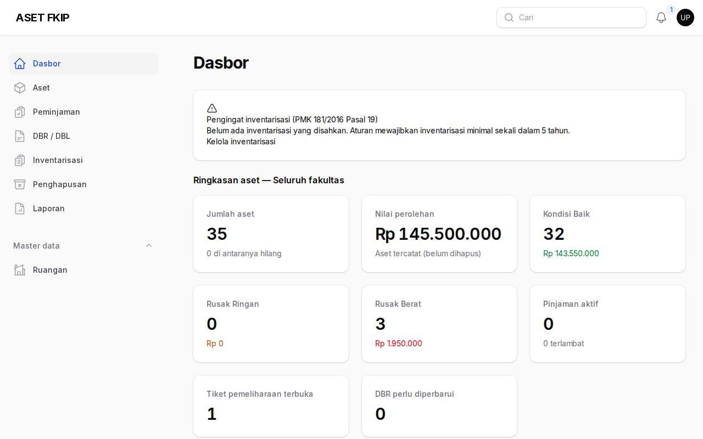
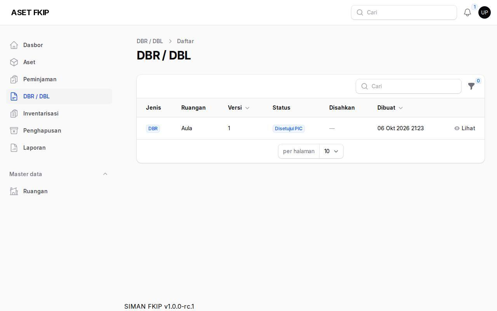
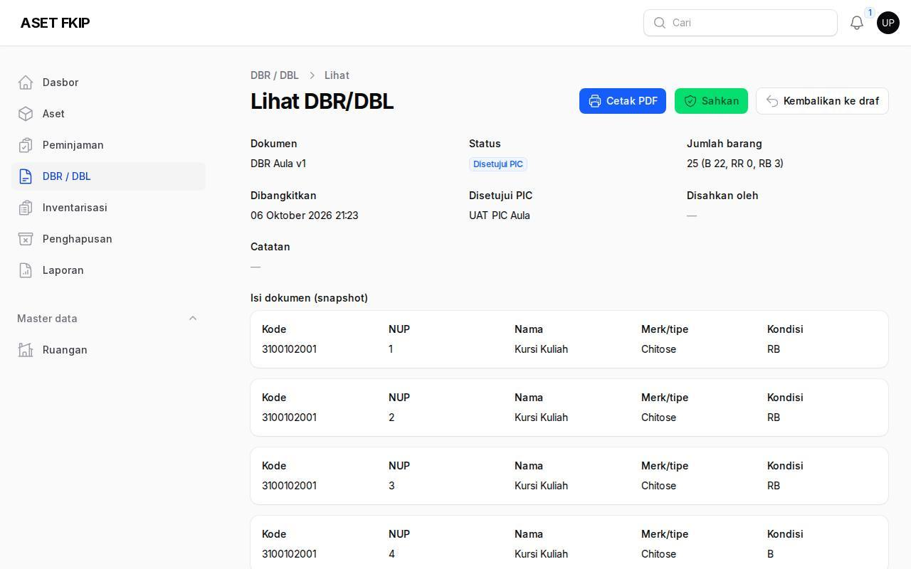
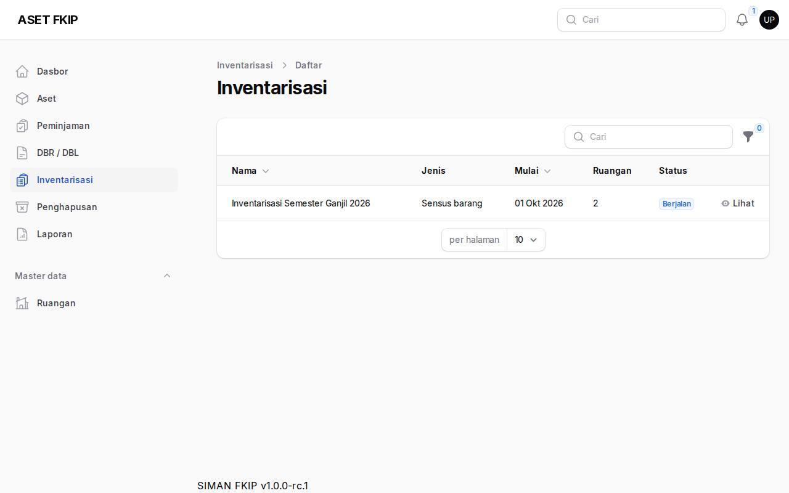
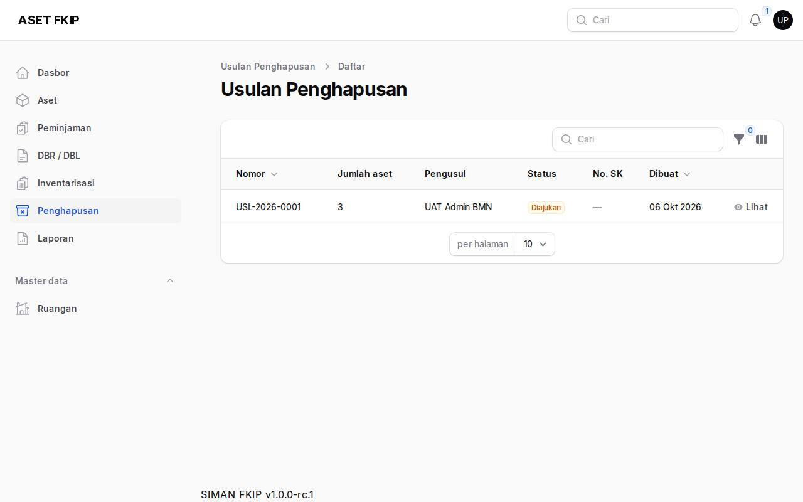
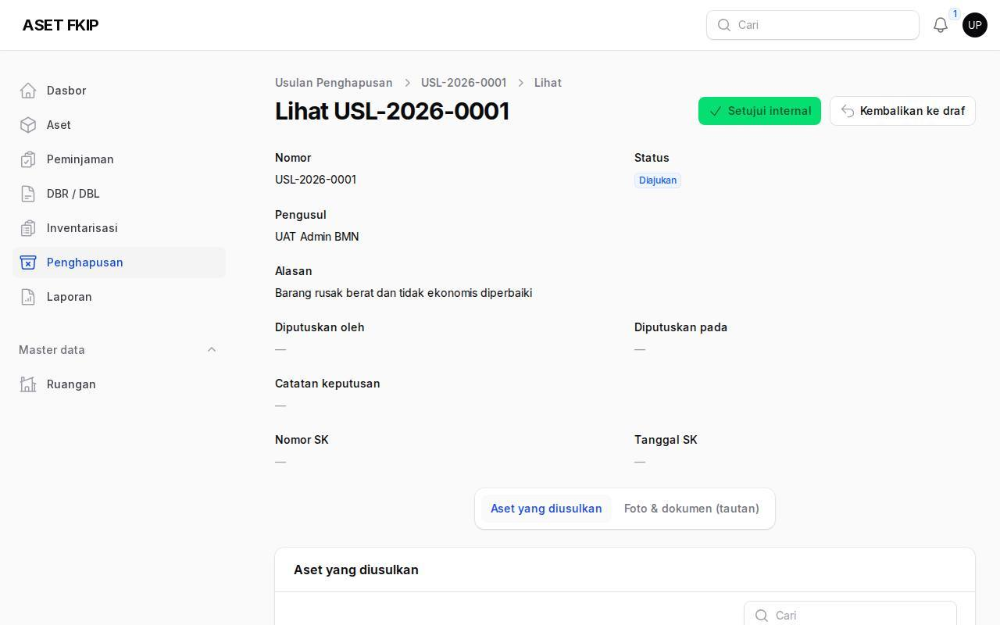
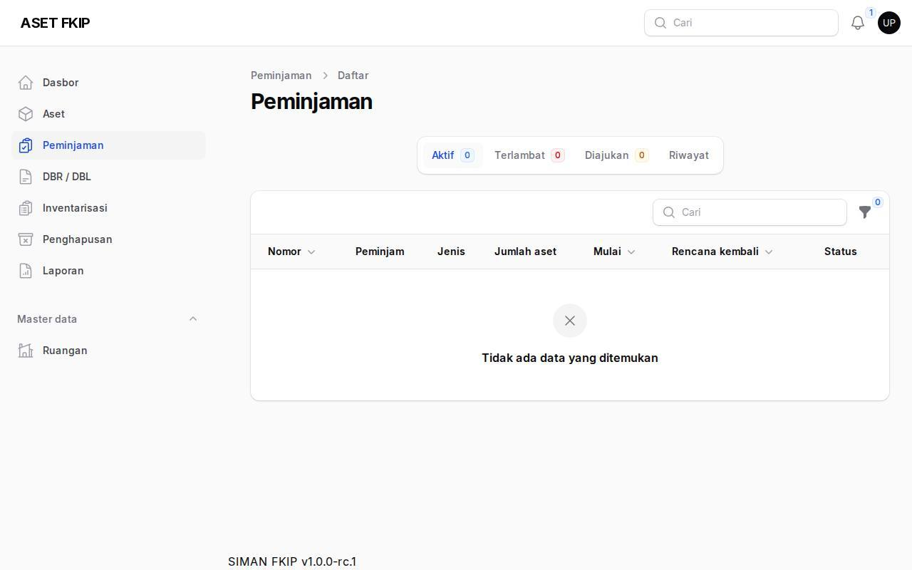
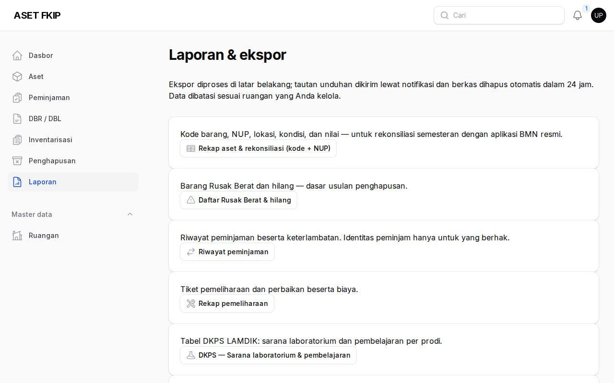

1. Dasbor
Dasbor menampilkan ringkasan seluruh fakultas. Notifikasi (lonceng dan surel) memberi tahu bila ada DBR atau berita acara yang menunggu pengesahan.

2. Mengesahkan DBR/DBL
DBR / DBL → buka dokumen berstatus disetujui PIC → periksa daftar → Sahkan. Dokumen disimpan sebagai snapshot; Kembalikan ke draf bila perlu perbaikan.


3. Berita acara inventarisasi
Inventarisasi → periode yang sudah ditutup → periksa berita acara (PDF dan selisih Excel) → Sahkan berita acara.

4. Usulan penghapusan
Penghapusan → usulan berstatus diajukan → Setujui internal atau Tolak (alasan wajib). Setelah disetujui, admin mencatat SK penghapusan.


5. Peminjaman pihak luar dan laporan
Permohonan pihak luar diputuskan oleh pejabat penatausahaan (skema pemanfaatan/sewa mengikuti ketentuan yang berlaku). Menu Laporan tersedia untuk pengunduhan.

